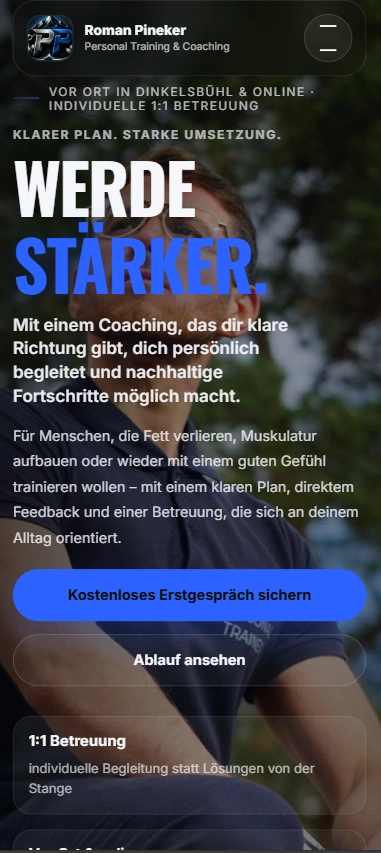
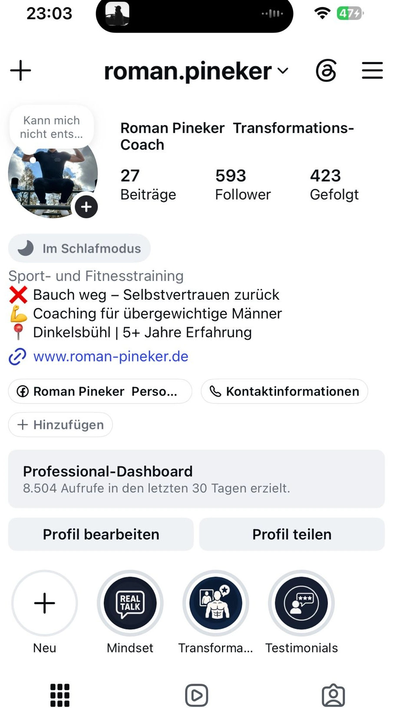
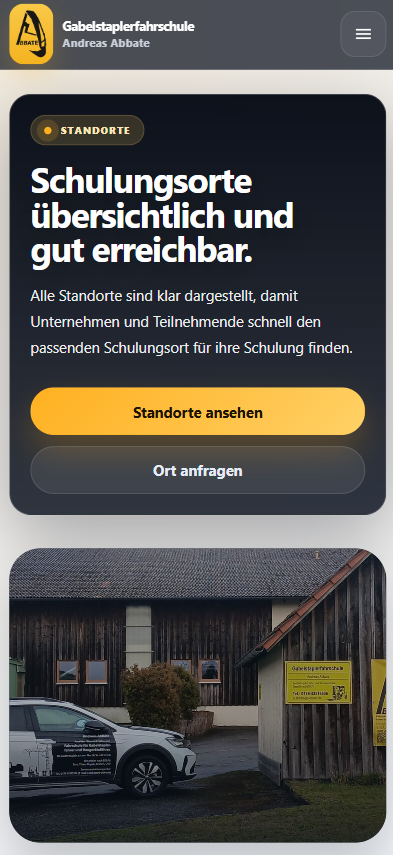

Deine Inhalte bekommen eine klare Richtung.
Themen, Botschaften und Formate werden so geplant, dass sie zu deinem Angebot und deiner Zielgruppe passen.
Ich helfe dir, dein Profil so aufzubauen, dass es gepflegt wirkt, Vertrauen schafft und deine Website sinnvoll unterstützt.




Ein sauberer Social-Media-Auftritt zeigt, dass dein Unternehmen aktiv, erreichbar und professionell aufgestellt ist.
Themen, Botschaften und Formate werden so geplant, dass sie zu deinem Angebot und deiner Zielgruppe passen.
Ein einheitlicher Look sorgt dafür, dass Beiträge, Storys und Highlights nicht zufällig wirken.
Mit wiederkehrenden Formaten musst du nicht jedes Mal neu anfangen und dein Profil bleibt gepflegt.
Wenn Besucher von Social Media auf deine Website wechseln, soll der Eindruck stark und einheitlich bleiben.
Dein Profil wirkt stärker, wenn Inhalte, Design, Website und Kontaktweg zusammenpassen.
Du bekommst Themen und Formate, die zu deinem Angebot passen und nicht nur hübsch aussehen.
Vorlagen sorgen dafür, dass dein Content professionell bleibt und schneller erstellt werden kann.
Social Media schafft Aufmerksamkeit. Die Website vertieft Vertrauen. Gemeinsam entsteht ein klarer Weg zur Anfrage.
So entsteht ein professioneller Eindruck vom ersten Profilbesuch bis zur Website-Anfrage.

Ein gepflegtes Profil zeigt Aktivität, Positionierung und professionelle Außenwirkung.
Live ansehen ↗
Auch nach dem Klick vom Profil wirkt der Auftritt klar, vertrauenswürdig und mobil leicht erfassbar.
Live ansehen ↗Wichtige Inhalte bleiben lesbar, der Nutzen ist sofort klar und der nächste Schritt schnell erreichbar.
Live ansehen ↗Vorlagen machen deinen Content schneller, einheitlicher und professioneller.
Wir schaffen eine klare Linie aus Themen, Vorlagen und Kontaktweg — damit dein Profil nicht nur aktiv aussieht, sondern dein Angebot stärkt.
Besucher sollen schnell erkennen, wofür du stehst und warum dein Angebot relevant ist.
Ein sauberes Designsystem sorgt dafür, dass dein Profil gepflegt und hochwertig wirkt.
Du bekommst Content-Formate, die sich praktisch einsetzen lassen und zur Website passen.

Dann lass uns deinen Social-Media-Auftritt so strukturieren, dass er Vertrauen aufbaut und deine Website sinnvoll unterstützt.